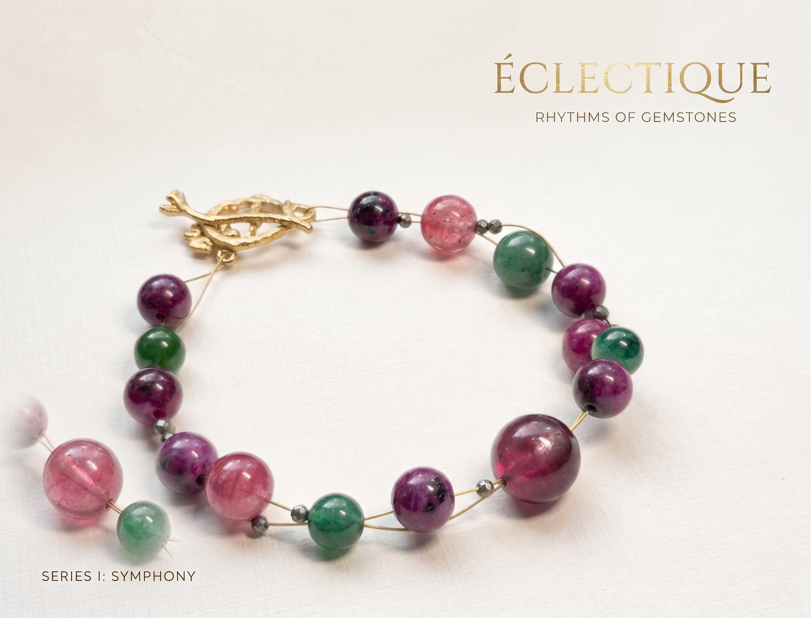
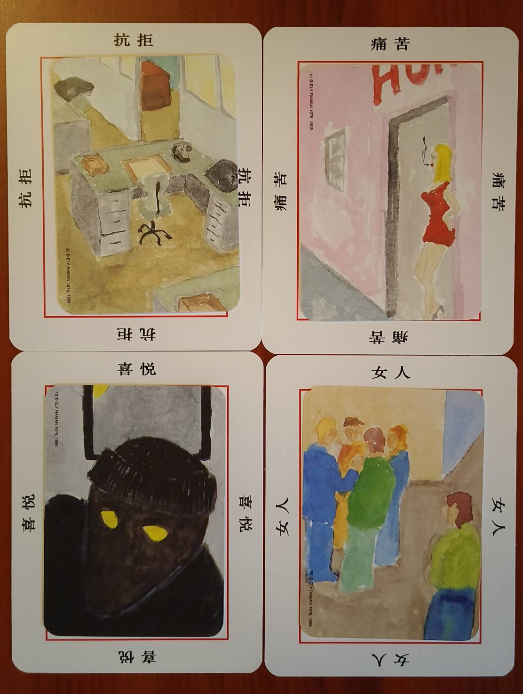
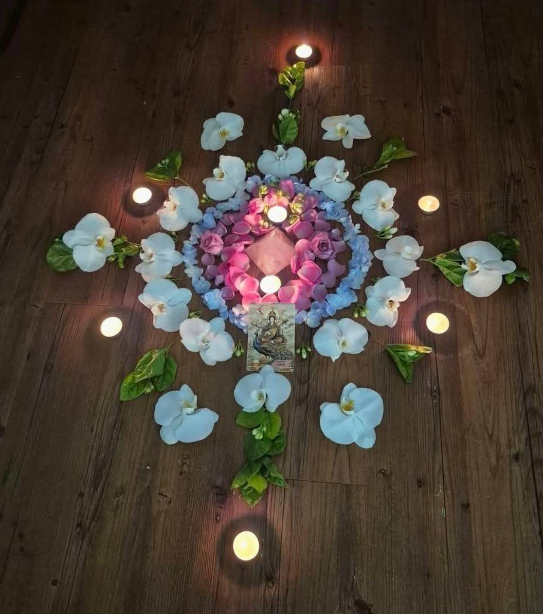

今天，想抽一張卡嗎？
不占卜，也沒有標準答案。
只是看看今天的你，剛好需要聽見什麼。
「這句話正在等待被翻開...」
✨ 你今天已經抽過卡片囉！已為你保留今日的溫暖陪伴。
如果你最近正在經歷一些改變
可能是正要離開一段關係。可能是想換一份工作。
有時候明明知道不能再這樣，卻還不知道下一步。
有時候只是倦了，想找個地方坐一下。
我們不急著告訴你答案。有時候，你需要的是一場對話。有時候，是學一件新的事。有時候，是做出一件東西。有時候，只是需要有人陪你把腦袋裡那團線慢慢理一理。
改變不一定從一個重大決定開始。你可以從一件小小的、有趣的事當作起點。
選擇一種適合你現在狀態的開始
如果你想動手做點什麼
用雙手做一件東西，也許會看見一個不一樣的自己。輕珠寶設計實作課、曼陀羅創作工作坊與自由書寫。
如果你想把腦袋裡的線理一理
不知道下一步怎麼走，可以先說說現在卡在哪裡。包含牌卡占卜、職涯探索、從顏色聊心事。
如果你只是很累想讓身體鬆下來
讓身體先說話，腦袋先靠邊休息一下。頌缽音療、呼吸調整課、瑜珈與水晶療癒空間。
如果你想多了解自己一點
不急著預測未來，先把現在的自己看清楚。人類圖、礦石生命路徑。
如果你什麼都想試看看｜新生活實驗室
不知道自己需要什麼，也沒關係。我們一起聊聊，從現在的狀態出發，找一個可以試試看的小小開始。依照你的需要，組合對話、課程與體驗，設計一段屬於你的新生活實驗。
「關於人生，我們都曾經不知道怎麼辦」
我曾經以為，人生到了某個階段，就應該知道自己要什麼。
後來才發現，不是每一段人生都有清楚的地圖。
有時候離開一份工作，並不代表下一份工作已經準備好了。
有時候知道一段關係不適合自己，也不代表告別就會很容易。
有時候只是覺得：「我不能再這樣下去了。」但除此之外，什麼都不知道。
「走舊路，到不了新地方。」
所以我開始想，也許我們真正需要的，不是一個告訴我們答案的人，而是一個可以一起想想看的人。
這幾年，我離開了金融業主管的工作，也一直在摸索，自己究竟想往哪裡走。
而在這段找尋自己的過程裡，我遇見了許願象。
在這裡，我得到很多支持。也遇見了 Freya。她是一個很忠於自己、也願意一直嘗試的人。漸漸地，我也開始認識許願象裡的其他老師。她們每一個人都有自己的樣子、自己的專長，也都有一條自己正在走的路。
我很喜歡這件事。
因為許願象從來不像是一個「告訴你人生應該怎麼走」的地方。更像是一群各自帶著故事、帶著專長，也還在摸索人生的人，剛好走到了一起。我們互相討論，互相支持，也一起試一些新的事情。想知道，一個人可以怎麼把自己的人生，過得更像自己。
我們都明白，生活裡的迷霧並不會因此立刻散去。但一起走一小段，把那些藏在心裡、還說不清楚的事情慢慢說出來，或許就已經足夠。
我們最近正在做的事
用創作與對話，讓軟性能力變得清晰可見

實體課程輕珠寶設計創業課
把一顆水晶、一條線、一雙手，變成一件真正屬於自己的作品與創業能力。

一對一諮詢自我探索
當心裡有一件事情一直繞，換一個角度看看。讓卡片說故事，看見幽微心事。
 職涯諮詢
職涯諮詢
職涯探索與方向釐清
不一定要找到夢想工作，先找到不想再過的生活。陪你把眼前事情看清楚。

主題工作坊身心舒壓工作坊
讓身體先說話，讓腦袋休息一下。透過花陣曼陀羅創作與頌缽，換一個角度放鬆。
來到十字路口的人們常常會這樣想......
「我是不是能力不好？」
你一定會迷惘，會害怕。但這一切，並不指向能力不好。
「我到底要不要改變？」
急著往前，有時候反而會讓我們一直否定現在的自己。先停一下。看看自己真正想要的是什麼。
「好像看不到未來，我不知道要怎麼辦。」
那就先承認不知道。把「我想要的」、「我做得到的」、以及「我還不知道的」分開。未知，不需要現在就被解決。
「我已經很累了。」
總是在服務別人的你，也該好好服務自己一天了。
你不用現在就知道答案。
但如果你願意，我們可以成為你的防空洞。
不是讓你躲很久，只是當人生太亂，世界太吵的時候，允許自己按下暫停鍵。
也許是一場對話。也許是一堂課。也許，只是一個願意支持你去探險的人。
改變不一定要從很大的決定開始。有時候，只是先讓自己走到另一條路上，看看那裡有什麼。
也許下一步，就藏在那裡。